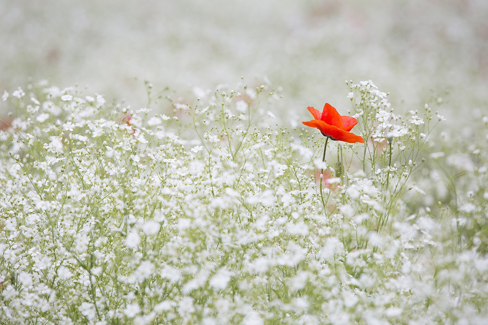

About Me

I have many passions: writing, music, and biology are among them. I’m an avid reader, video game nerd, and caffeine guzzler. But, what has sustained me my whole life is my drive to be creative. Vector graphics are my bread and butter, but graphic design has (to my surprise) stoked my interest in web development and typography.
My Work